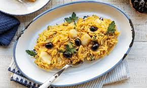
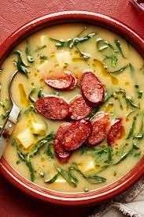

Explore Portugal's Top 5 Culinary Delights
Indulge in the best of Portuguese cuisine with our top 5 recommendations. Click on each dish to discover more!





Indulge in the best of Portuguese cuisine with our top 5 recommendations. Click on each dish to discover more!